측량및지형공간정보산업기사 (2018-04-28 기출문제)
1과목: 응용측량
1. 그림과 같은 지역의 전체 토량은?
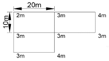
- 1850 m2
- 1950 m2
- 2⑤0 m2
- 2150 m2
(정답률: 68%)

2. 경관측량에 대한 설명으로 옳지 않는 것은?
- 경관은 인간의 시각적 인식에 의한 공간구성으로 대상군을 전체로 보는 인간의 심적 현상에 의해 판단된다.
- 경관측량의 목적은 인간의 쾌적한 생활공간을 창조하는 데 필요한 조사와 설계에 기여하는 것이다.
- 경관구성요소를 인식의 주체인 경관장계, 인식의 대상이 되는 시점계, 이를 둘러싼 대상계로 나눌 수 있다.
- 경관의 정량화를 해석하기 위해서는 시각적 측면과 시각현상에 잠재되어 있는 의미적 측면을 동시에 고려하여야 한다.
(정답률: 56%)
3. 그림은 축척 1:500으로 측량하여 얻은 결과이다. 실제 면적은?
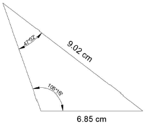
- 70.6 m2
- 176.5 m2
- 353.03 m2
- 402.02 m2
(정답률: 49%)
4. 지표에 설치된 중심선을 기준으로 터널 입구에서 굴착을 시작하고 굴착이 진행됨에 따라 터널내의 중심선을 설정하는 작업은?
- 다보(dowel)설치
- 터널 내 곡선설치
- 지표설치
- 지하설치
(정답률: 60%)
5. 원곡선 설치에서 곡선반지름이 250m, 교각이 65°, 곡선시점의 위치가 No.245+09.450m일 때, 곡선중심의 위치는? (단, 중심말뚝 간격은 20m이다)(오류 신고가 접수된 문제입니다. 반드시 정답과 해설을 확인하시기 바랍니다.)
- No.245+13.066m
- No.251+13.066m
- No.259+06.034m
- No.259+13.066m
(정답률: 37%)
6. 단곡선 설치과정에서 접선길이, 곡선길이 및 외할을 구하기 위해 우선적으로 결정해야 할 사항으로 옳게 짝지어진 것은?
- 시점, 종점
- 시점, 반지름
- 반지름, 교각
- 중점, 교각
(정답률: 76%)
7. 자동차가 곡선부를 통과할 때 원심력의 작용을 받아 접선방향으로 이탈하려고 하므로 이것을 방지하기 위해아 노면에 높이차를 두는 것을 무엇이라 하는가?
- 확폭(slack)
- 편경사(cant)
- 완화구간
- 시거
(정답률: 76%)
8. 하천의 수면으로부터 수면에 따른 유속을 관측한 결과가 아래와 같을 때 3점법에 의한 평균유속은?
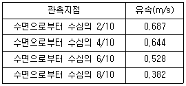
- 0.531 m/s
- 0.571 m/s
- 0.528 m/s
- 0.382 m/s
(정답률: 62%)
9. 노선측량의 순서로 가장 적합한 것은?
- 노선선정 → 계획조사측량 → 실시설계측량 → 세부측량 → 용지측량 → 공사측량
- 노선선정 → 실시설계측량 → 세부측량 → 용지측량 → 공사측량 → 계획조사측량
- 노선선정 → 공사측량 → 실시설계측량 → 세부측량 → 용지측량 → 계획조사측량
- 노선선정 → 계획조사측량 → 실시설계측량 → 공사측량 → 세부측량 → 용지측량
(정답률: 70%)
10. 하천의 유속측정에 있어서 표면유속, 최소유속, 평균유속, 최대유속의 4가지 유속이 하천의 표면에서부터 하저에 이르기까지 나타나는 일반적인 순서로 옳은 것은?
- 표면유속 → 최대유속 → 최소유속 → 평균유속
- 표면유속 → 평균유속 → 최대유숙 → 최소유속
- 표면유속 → 최대유속 → 평균유속 → 최소유속
- 표면유속 → 최소유속 → 평균유속 → 최대유속
(정답률: 64%)
11. 삼각현 3변의 길이가 아래와 같을 때 면적은?
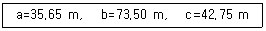
- 269.76 m2
- 389.67 m2
- 398.96 m2
- 498.96 m2
(정답률: 56%)
12. 축척 1:1200 지도상의 면적을 측정할 때, 이 축척을 1:600으로 잘못 알고 측정하였더니 10000 m2가 나왔다면 실제면적은?
- 40000 m2
- 20000 m2
- 10000 m2
- 2500 m2
(정답률: 53%)
13. 노선측량에서 곡산반지름 60m, 클로소이드 매개변수가 40 m일 때 곡선 길이는?
- 1.5 m
- 26.7 m
- 49.0 m
- 90.0 m
(정답률: 56%)
14. 교각이 49° 30' , 반지름이 150 m인 원곡선 설치 시 중심말뚝 간격 20 m에 대한 편각은?
- 6° 36' 18”
- 4° 20' 15”
- 3° 49' 11”
- 1° 46' 32”
(정답률: 53%)
15. 부자에 의한 유속관측을 하고 있다. 부자를 띄운 뒤 2분 후에 하류 120m 지점에서 관측되었다면 이때의 표면유속은?
- 1 m/s
- 2 m/s
- 3 m/s
- 4 m/s
(정답률: 64%)
16. 배면적을 구하는 방법을 옳은 것은?
- |Σ(각 측선의 조정경거×각 측선의 횡거)|
- |Σ(각 측선의 조정위거×각 측선의 배횡거)|
- |Σ(각 측선의 조정경거×각 측선의 배횡거)|
- |Σ(각 측선의 조정위거×각 측선의 조정경거)|
(정답률: 63%)
17. 20 m 간격으로 등고선이 표시되어 있는 구릉지에서 구적기로 면적을 구한 값이 A5=200 m2, A4=250 m2, A3=600 m2, A2=800 m2, A1=1600 m2 일 때의 토량은? (단, 각주공식을 이용하고 정상부는 평평한 것으로 가정한다.)
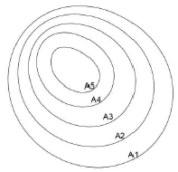
- 45000 m2
- 46000 m2
- 47000 m2
- 48000 m2
(정답률: 56%)
18. 국제수로기구(IHO)에서 안전항해를 위해 제작된 기준 중 해도제작에 사오용되는 자료를 수집하기 위한 수심측량 등급분류 기준에 해당하지 않는 것은?
- 1a등급
- 등급외 측량
- 특등급
- 2등급
(정답률: 64%)
19. 해양에서 수심측량을 할 경우 음향측심 장비로부터 취득한 수삼에 필요한 보정이 아닌것은?
- 정사보정
- 조석보정
- 홀수보정
- 음속보정
(정답률: 48%)
20. 그림과 같은 경사터널에서 A, B 두 측점간의 고저차는? (단, A의 기계고 IH=1 m, B=의 HP=1.5m, 사거리 S=20m, 경사각 θ=20°)
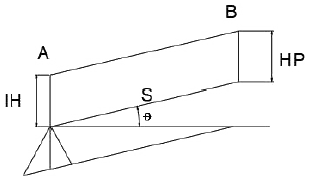
- 4.34 m
- 6.34 m
- 7.34 m
- 9.37 m
(정답률: 49%)
2과목: 사진측량 및 원격탐사
21. 다음 중 3차원 지도제작에 이용되는 위성은?
- SPOT 위성
- LANDSAT 5호 위성
- MOS 1호 위성
- NOAA 위성
(정답률: 55%)
22. TIN에 대한 설명으로 옳지 않는 것은?
- 벡터 구조이다.
- 위상 구조를 갖는다.
- 불규칙 삼각망이다.
- 2차원 공간 모델이다.
(정답률: 72%)
23. 물체의 분광반사특성에 대한 설명으로 옳은 것은?
- 같은 물체라도 시간과 공간에 따라 반사율이 다르게 나타난다.
- 토양은 식물이나 물에 비하여 파장에 따른 반사율의 변화가 크다.
- 식물은 근적외선 영역에서 가시광선 영역보다 반사율이 높다.
- 물은 식물이나 토양에 비해 반사도가 높다.
(정답률: 62%)
24. 사진측량에서 말하는 모형(mode)의 의미로 옳은 것은?
- 촬영지역을 대표하는 부분
- 촬영사진 중 수정 모자이크된 부분
- 한 쌍의 중복된 사진으로 입체시 되는 부분
- 촬영된 각각의 사진 한 장이 포괄하는 부분
(정답률: 76%)
25. 다음 중 가장 최근에 개발된 사진측량시스템은?
- 편위 수정기
- 기계식 도화기
- 해석식 도화기
- 수치 도화기
(정답률: 71%)
26. 초점거리 150 mm, 사진크기 23 cm×23 cm인 카메라로 촬영고도 1800 m, 촬영기선 길이 960m가 되도록 항공사진촬영을 하였다면 이 사진의 종중복도는?
- 60.6%
- 63.4%
- 65.2%
- 68.8%
(정답률: 52%)
27. 전정색 영상의 공간해상도가 1 m, 밴드 수가 1개이고, 다중분광영상의 공간해상도가 4m, 밴드 수가 4개라고 할 때, 전정색 영상과 다중분광영상의 해상도 비교에 대한 설명으로 옳은 것은?
- 전정색 영상이 다중분광영상보다 공간해상도와 분광해상도가 높다.
- 전정색 영상이 다중분광영상보다 공간해상도가 높고 분광해상도는 낮다.
- 전정색 영상이 다중분광영상보다 공간해상도와 분광해상도가 낮다.
- 전정색 영상이 다중분광영상보다 공간해상도가 낮고 분광해상도가 높다.
(정답률: 61%)
28. 촬용고도 2000 m에서 평지를 촬영한 연직사진이 있다. 이 밀착사진 상에 있는 2점간의 시차를 측정한 결과 1.5 mm이었다. 2점간의 높이차는? (단, 카메라의 초점거리는 15 cm, 종중복도는 60%, 사진크기는 23 cm×23 cm이다.)
- 26.3 m
- 32.6 m
- 68.2 m
- 92.0 m
(정답률: 45%)
29. 아래 그림에서 과잉수정계수(over correction factor)를 구하는 식으로 옳은 것은?
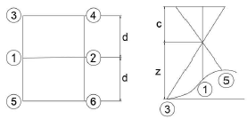
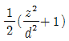
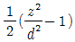
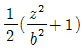
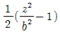
(정답률: 51%)
30. 항공사진이 주점에 대한 설명에 해당하는 것은?
- 렌즈의 중심을 통한 수선 및 연직선을 2등분하는 직선의 화면과의 교점
- 렌즈의 중심을 통한 연직선과 화면과의 교점
- 렌즈의 중심으로부터 화면에 내린 수선의 교점
- 사진면에서 연직면을 중심으로 방사상의 변위가 생기는점
(정답률: 63%)
31. 항공사진측량의 일반적인 특성에 관한 설명으로 옳지 않은 것은?
- 축척의 변경이 용이하다.
- 분업화에 의해 능률이 높다.
- 접근하기 어려운 대상물을 측량할 수 있다.
- 소규모 구역에서의 경제적인 측량에 적합하다.
(정답률: 83%)
32. 항공사진 촬영 시 유의사항으로 옳은 것은?
- 촬영고도는 계획고도에서 대하서 10% 이상의 차가 있어야 한다.
- 종중복도는 40%, 횡중복도는 10% 정도로 한다.
- 촬영지역 전체가 완전히 입체시 되도록 촬영한다.
- 비행방향에 대하여 κ는 5°, ψ나 ω는 10°를 넘어서는 안 된다.
(정답률: 55%)
33. 세부도화를 하기 위한 표정 작업의 종류가 아닌 것은?
- 수시표정
- 내부표정
- 상호표정
- 절대표정
(정답률: 70%)
34. 항공삼각측량에서 스트립(strip)을 형성하기 위해 사용되는 점은?
- 횡접합점
- 종접합점
- 자침점
- 자연점
(정답률: 50%)
35. 다음 중 상호표정인자가 아닌 것은?
- ω
- bx
- by
- bz
(정답률: 69%)
36. 사진 상 사진 주점을 지나는 직선상의 A, B 두점간의 길이가 15 cm이고, 축척 1:1000 지형도에서는 18cm이었다면 사진의 축척은?
- 1:1200
- 1:1250
- 1:1300
- 1:12000
(정답률: 50%)
37. N차원의 피쳐공간에서 분류될 화소로부터 가장 가까운 훈련자료 화소까지의 유클리드 거리를 계산하고 그것을 해당 클래스로 할당하여 영상을 분류하는 방법은?
- 최근린 분류법(nearest-neighbor classifier)
- k-최근린 분류법(k-nearest-neighbor classifier)
- 최장거리 분류법(maximum distance classifier)
- 거리가중 k-최근린 분류법(k-nearest-neighbor-distance-weighted classifier)
(정답률: 80%)
38. 카메라의 초점거리 15 cm, 촬영고도 1800 m인 연직사진에서 도로 교차점과 표고 300m의 산정이 찍혀 있다. 도로 교차점은 사진 주점과 일치하고, 교차점과 산정의 거리는 밀착하진상에서 55mm이었다면 이 사진으로부터 작성된 축척 1:5000 지형 상에서 두점의 거리는?
- 110 mm
- 130 mm
- 150 mm
- 170 mm
(정답률: 40%)
39. 사진지표의 용도가 아닌 것은?
- 사진의 신축 측정
- 주점의 위치 결정
- 해석적 내부표정
- 지구 곡률 보정
(정답률: 68%)
40. 원격탐사에서 화상자료 전체 자료랑(byte)을 나타낸 것으로 옳은 것은?
- (라인수)×(화소수)×(채널수)×(비트수/8)
- (라인수)×(화소수)×(채널수)×(바이트수/8)
- (라인수)×(화소수)×(채널수/2)×(비트수/8)
- (라인수)×(화소수)×(채널수/2)×(바이트수/8)
(정답률: 57%)
3과목: GIS 및 GPS
41. 지리정보시스템(GIS)의 데이터 취득에 대한 일반적인 설명으로 옳지 않은 것은?
- 스캐닝이 디지타이징에 비하여 작업속도가 빠르다.
- 디지타이징은 전반적으로 자동화된 작업과정이므로 숙련도에 크게 좌우되지 않는다.
- 스캐닝에 의한 수치지도 제작을 위해서는 래스터를 벡터로 변환하는 과정이 필요하다.
- 디지타이징은 지도와 항공사진 등 아날로그 형식의 자료를 전산기에 의해서 직접 판독할 수 있는 수치 형식으로 변환하는 자료획득방법이다
(정답률: 75%)
42. GNSS 측량에 대한 설명으로 옳은 것은?
- GNSS 측량은 후처리방식과 실시간처리 방식으로 구분되며 실시간처리방식에는 정지측량, 신속정지측량, 이동측량이 포함된다.
- RINEX는 GNSS 수신기의 기종에 관계없이 데이터의 호환이 가능하도록 하는 공용포맷의 일종이다.
- 다중경로(Multipath)는 GNSS 수신기에 다양한 신호를 유도하여 위치정확도를 향상시킨다.
- GNSS 정지측량은 고정점의 수신기에서 라디오 모뎀에 의해 데이터와 보정자료를 이동점 수신기로 전송하여 현장에서 직접 측량성과를 획득하는 측량방법이다.
(정답률: 57%)
43. 지리정보시스템(GIS)의 자료에 대한 설명으로 옳지 않는 것은?
- 자료는 위치자료(도형자료)와 특성자료(속성자료)로 대별할 수 있다.
- 위치자료와 특성자료는 서로 연관성을 가지고 있어야 한다.
- 일반적인 통계자료 또는 영상파일은 특성자료로 사용될 수 없다.
- 위치자료는 도면이나 지도와 같은 도형에서 위치 값을 수록하는 정보파일이다.
(정답률: 74%)
44. 지리정보시스템(GIS)에서 표면분석과 중첩분석의 가증 큰 차이점은?
- 자료분석의 범위
- 자료분석의 지형형태
- 자료에 사용되는 입력방식
- 자료에 사용되는 자료층의 수
(정답률: 57%)
45. 사용자가 네트워크나 컴퓨터를 의식하지 않고 장소에 상관없이 자유롭게 네트워크에 접속할 수 있는 정보통신 환경 또는 정보기술패러다임을 의미하는 것으로 1988년 미국의 마크 와이저에 의하여 처음 사용되었으며 지리정보시스템을 포함한 여러 분야에서 이용되고 있는 정보화 환경은?
- 위치기반서비스(LBS)
- 유비쿼터스(ubiquitous)
- 텔레메틱스(telematics)
- 지능형교통체계(ITS)
(정답률: 74%)
46. 지리정보시스템(GIS)에서 표준화가 필요한 이유로 가장 거리가 먼 것은?
- 데이터의 공동 활용을 통하여 데이터의 중복구축을 방지함으로써 데이터 구축비용을 절약한다.
- 표준 형식에 맞추어 하나의 기관에서 구축한 데이터를 많은 기관들이 공유하여 사용할 수 있다.
- 서로 다른 기관 간에 데이터의 유출 방지 및 데이터의 보안을 유지하기위해 필요하다.
- 데이터 제작 시 사용된 하드웨어나 소프트웨어에 구애받지 않고 손쉽게 데이터를 사용할 수 있다.
(정답률: 79%)
47. 국토지리정보원에서 발행하는 국가기본도에 적용되는 좌표계는?
- 경위도 좌표계
- 카텍(KATECH) 좌표계
- UTM(Universal Transverse Mercator) 좌표계
- 평면직각 좌표계(TM 좌표계 : Transverse Mercator)
(정답률: 61%)
48. 래스터형 GIS 데이터에 대한 설명으로 옳지 않은 것은?
- 원격탐사 자료와의 연계처리가 용이하다.
- 좌표변환과 같은 데이터 변환에 있어 많은 시간이 소요된다.
- 여러 레이어의 중첩이나 분석에 용이하다.
- 위상에 관한 정보가 제공되어 관망분석(network analysis)과 같은 공간분석이 가능하다.
(정답률: 58%)
49. Bool 대수를 사용한 면의 중첩에서 그림과 rhkxdms 논리연산을 바르게 나타낸 것은?
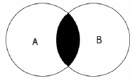
- A AND B
- A OR B
- A NOT B
- A XOR B
(정답률: 64%)
50. 지리정보시스템(GIS)의 직접적인 활용범위로 거리가 먼 것은?
- 토지정보체계(Land Information System)
- 도시정보체계(Urban Information System)
- 경영정보체계(Management Information System)
- 지리정보체계(Geographic Information System)
(정답률: 77%)
51. 지리정보시스템(Gis)에서 데이터 모델링의 일반적인 절차로 옳은 것은?
- 실세계 → 개념모델 → 논리모델 → 물리모델
- 실세계 → 논리모델 → 개념모델 → 물리모델
- 실세계 → 논리모델 → 물리모델 → 개념모델
- 실세계 → 물리모델 → 논리모델 → 개념모델
(정답률: 61%)
52. 다음 중 GNSS 측량을 직접 적용할 수 있는 분야는?
- 해안선 위치 결정
- 고층 건물이 밀접한 시가지역의 지적 경계 결정
- 터널 내부의 수평 위치결정
- 실내 측량 기준점 성과 결정
(정답률: 65%)
53. GPS 위성으로부터 송신된 신호를 수신기에서 획득 및 추적할 수 없도로 GPS 신호와 동일한 주파수 대역의 신호를 고의로 송신하는 전파간섭을 의미하는 용어는?
- 스니핑(sniffing)
- 재밍(jamming)
- 지오코딩(geocoding)
- 트래킹(tracking)
(정답률: 64%)
54. 지리정보시스템(GIS)을 통하여 수행할 수 있는 지도 모형화의 장점이 아닌 것은?
- 문제를 분명히 정의하고 문제를 해결하는 데 필요한 자료를 명확하게 결정할 수 있다.
- 여러 가지 연산 또는 시나리오의 결과를 쉽게 비교할 수 있다.
- 많은 경우에 조건을 변경하거나 시간의 경과에 따른 모의분석을 할 수 있다.
- 자료가 명목 혹은 서열의 척도로 구성되어 있을지라도 시스템은 레이어의 정보를 정수로 표현한다.
(정답률: 66%)
55. 다음 중 실세계의 현상들을 보다 정확히 묘사할 수 있으며 자료의 갱신이 용이한 자료 관리체계(DBMS)는?
- 관계지향형 DBMS
- 종속지향형 DBMS
- 객체지향형 DBMS
- 관망지향형 DBMS
(정답률: 65%)
56. GNSS 측량의 활용분야가 아닌 것은?
- 변위추정
- 영상복원
- 절대좌표해석
- 상대좌표해석
(정답률: 78%)
57. 다음 중 서로 다른 종류의 공간자료처리시스템 사이에서 교환포맷으로 사용하기에 가장 적합한 것은?
- GeoTiff
- BMP
- JPG
- PNG
(정답률: 69%)
58. GNSS 정지측위 방식에 의해 기준점 측량을 실시하였다. GNSS 관측 전후에 측정한 측 점에서 ARP(Antenna Reference Point)까지의 경사 거리는 각각 145.2 cm와 145.4 cm이었다. 안테나 반경이 13 cm이고, APR를 기준으로 한 APC(Antenna Phase Center) 오프셋(offset)이 높이방향으로 2.5 cm일 때 보정해야 할 안테나고(Antenna Height)는?
- 142.217 cm
- 147.217 cm
- 147.800 cm
- 142.800 cm
(정답률: 42%)
59. 아래의 레시터 데이터에 최소값 윈도우(Min kernel)를 3×3 크기로 적용한 결과로 옳은 것은?
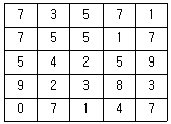
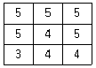
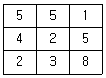
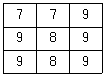
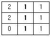
(정답률: 54%)
60. 각각의 GPS 위성이 가지고 있는 위성 교유의 식벽자라고 할 수 있는 코드는?
- PRN
- DOP
- DGPS
- RTK
(정답률: 40%)
4과목: 측량학
61. 삼각측량의 삼각망 조정에서 만족을 요하는 조건이 아는 것은?
- 공선조건
- 측점조건
- 각조건
- 변조건
(정답률: 70%)
62. 트래버스의 폐합오차 조정에 대한 설명 중 옳지 않는 것은?
- 트랜싯법칙은 각관측의 정확도가 거리관측의 정확도보다 좋은 경우에 사용된다.
- 컴퍼스법칙은 폐합오차를 전측선의 길이에 대한 각 측선의 길이에 비례하여 오차를 배분한다.
- 트랜싯법칙은 폐합오차를 각 측선의 위거, 경거 크기에 반비례하여 오차를 배분한다.
- 컴퍼스법칙은 각관측과 거리관측의 정밀도가 서로 비슷한 경우에 사용된다.
(정답률: 54%)
63. 표준자와 비교하였더니 30 m에 대하여 6 cm가 늘어난 줄자로 삼각형의 지역을 측정하여 삼사법으로 면적을 측정하였더니 950m2였다. 이지역의 실제 면적은?
- 953.8 m2
- 951.9 m2
- 946.2 m2
- 933.1 m2
(정답률: 41%)
64. 관측값의 신뢰도를 나타내는 경중률의 성질로 틀린 것은?
- 경중률은 관측횟수에 비례한다.
- 경중률은 우연오차의 제곱에 반비례한다.
- 경중률은 정도의 제곱에 비례한다.
- 직접수준측량 시 경중률은 노선길이에 비례한다.
(정답률: 51%)
65. 각 측정기의 기본요소에 속하지 않는 것은?
- 연직축
- 삼각축
- 수평축
- 시준축
(정답률: 54%)
66. 다음 측량기기 중 거리관측과 각관측을 동시에 할 수 있는 장비는?
- Theodolite
- EDM
- Total Station
- Level
(정답률: 83%)
67. 수준측량을 실시한 결과가 아래와 같을 때 P점의 표고는?
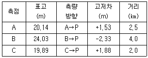
- 21.75 m
- 21.72 m
- 21.70 m
- 21.68 m
(정답률: 51%)
68. 트래버스 계산 결과에서 측점 3의 합위거는?
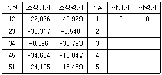
- -58.393 m
- -28.624 m
- 58.393 m
- 64.941 m
(정답률: 56%)
69. 구과량(e)에 대한 설명으로 옳은 것은?
- 평면과 구면과의 경계점
- 구면 삼각형의 내각의 합이 180°보다 큰양
- 구면 삼각형에서 삼격형의 변장을 계산한 값
- e=F/R로 표시되는 양(F : 구면삼각형의 면적, R : 지구의 곡선반지름)
(정답률: 71%)
70. 오차의 종류 중 확률 법칙에 따라 최소제곱법으로 처리하는 오차는?
- 과오
- 정오차
- 부정오차
- 누적오차
(정답률: 64%)
71. 다음 중 지성선의 종류에 속하지 않는 것은?
- 계곡선
- 능선
- 경사변환선
- 산능대지선
(정답률: 51%)
72. 축척 1:50000 지형도의 산정에서 계곡까지의 거리가 42mm이고 산정의 표고가 780m, 계곡의 표고가 80m이었다면 이 사면의 경사는?
- 1/5
- 1/4
- 1/3
- 1/2
(정답률: 48%)
73. 삼각점 A에 기계를 세우고 삼각점 C가 시준되지 않아 P를 관측하여 T'=110°를 얻었다면 보정한 각T는? (단, S=1km, e=20cm, k=298° 45')
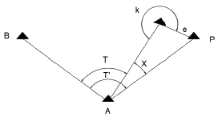
- 108° 58' 24"
- 108° 59' 24"
- 109° 58' 24"
- 109° 59' 24"
(정답률: 25%)
74. 그림에서 B.M의 지반고가 89.81m라면 C점의 지반고는? (단, 단위 : m)
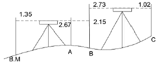
- 87.45 m
- 88.90 m
- 90.20 m
- 90.72 m
(정답률: 42%)
75. 공공측량 작업계획서를 제출할 때 포함되지 않아도 되는 사항은? (단, 그 밖에 작업에 필요한 사항은 제외한다.)
- 공공측량의 목적 및 활용 범위
- 공공측량의 위치 및 사업량
- 공공측량의 시행자의 규모
- 사용할 측량기기의 종류 및 성능
(정답률: 52%)
76. 성능검사를 받아야 하는 측량기기중 금속관로탐지기의 성능검사 주기로 옳은 것은?
- 1년
- 2년
- 3년
- 5년
(정답률: 82%)
77. 법칙규정에 대한 설명으로 옳지 않는 것은?
- 심사를 받지 아니하고 지도등을 간행하여 판매하거나 배포한 자는 1년 이하의 징역 또는 2천만원 이하의 벌금에 처한다.
- 다른 사람에게 측량업등록증 또는 측량업 등록수첩을 빌려주거나 자기의 성명 또는 상호를 사용하여 측량업무를 하게 한 자는 1년 이하의 징역 또는 1천만원 이하의 벌금에 처한다.
- 측량업자로서 속입수, 위력 그 밖의 방법으로 측량업과 관련된 입찰의 공정성을 해친 자는 3년 이하의 징역 또는 3천만원 이하의 벌금에 처한다.
- 성능검사를 부정하게 한 성능검사대행자는 2년 이하의 징역 또는 2천만원 이하의 벌금에 처한다.
(정답률: 62%)
78. 측량기준에 대한 설명으로 옳지 않은 것은?
- 측량의 원점은 대한민국 경위도원점 및 수준원점으로 한다.
- 수로조사에서 간출지의 높이와 수심은 약최고고조면을 기준으로 측량한다.
- 해안선은 해수면의 약최고고조면에 이르렀을 때의 육지와 해수면과의 경계로 표시한다.
- 위치는 세계측지계에 따라 측정한 지리학적 경위도와 높이(평균해수면으로부터의 높이를 말한다.)로 표시한다.
(정답률: 58%)
79. 기본측량 측량성과의 고시사항에 포함되지 않는 것은? (단, 그밖에 필요한 사항은 제외한다.)
- 측량실시의 시기 및 지역
- 설치한 측량기준점의 수
- 측량의 정확도
- 측량 수행자
(정답률: 63%)
80. 공간정보의 구축 및 관리 등에 관한 볍률에서 규정하는 수치주제도에 속하지 않는 것은?
- 지하시설물도
- 토지비복지도
- 행정구역도
- 수치지적도
(정답률: 42%)